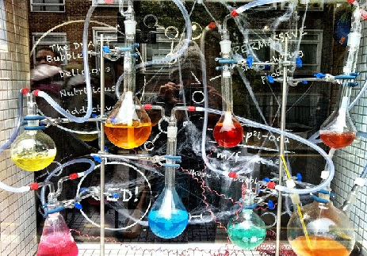
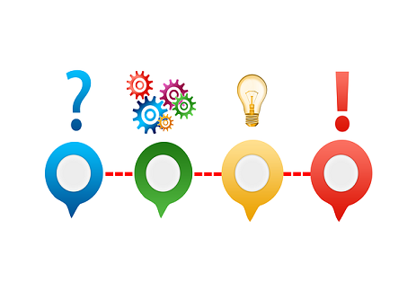
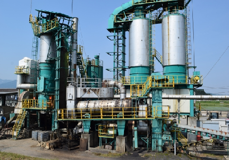

①製造工程の改善

現状の製造方法からより効率的にあるいは安全に製造するために新たな方法を検討し、実現する業務です。例えば、製品の不純物を発生させないための最適な条件の検討、より安価に製造できる製造方法の開発、より安全な原料に代替できるような製造方法の開発などがあります。
②トラブルの解決

現場はときには様々な問題を抱えています。例えば環境汚染につながる不純物を放棄してしまっていた場合は適切に処理しなければなりませんし、起動中の設備で問題が発生した時は原因を突き止めなければなりません。こうした問題を解決することも生産技術の業務です。
③製造設備の増強

顧客からの製品のニーズが増加し、運転時間や人手を増やしたり、製造工程を改善したりしても供給が追いつかなくなったときは設備を大きくするもしくは増やすことで生産能力を増加させます。これを設備の増強といいます。これにより、例えばニーズが2倍増加した場合は設備を2倍大きくするかもう一つ設備を増やすことで生産能力を2倍にして対応します。増強はプランを立て設計し、完成に向けて準備し、完成後には問題がないかテスト運転するといった流れとなっています。これらを一貫して担当します。